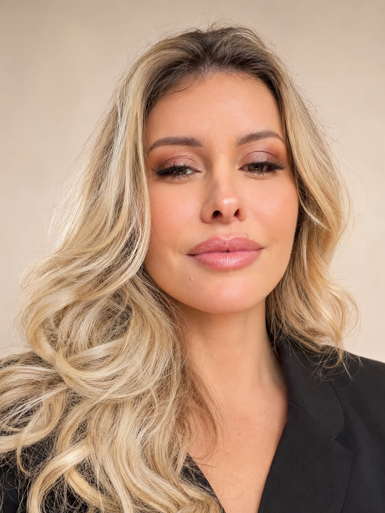
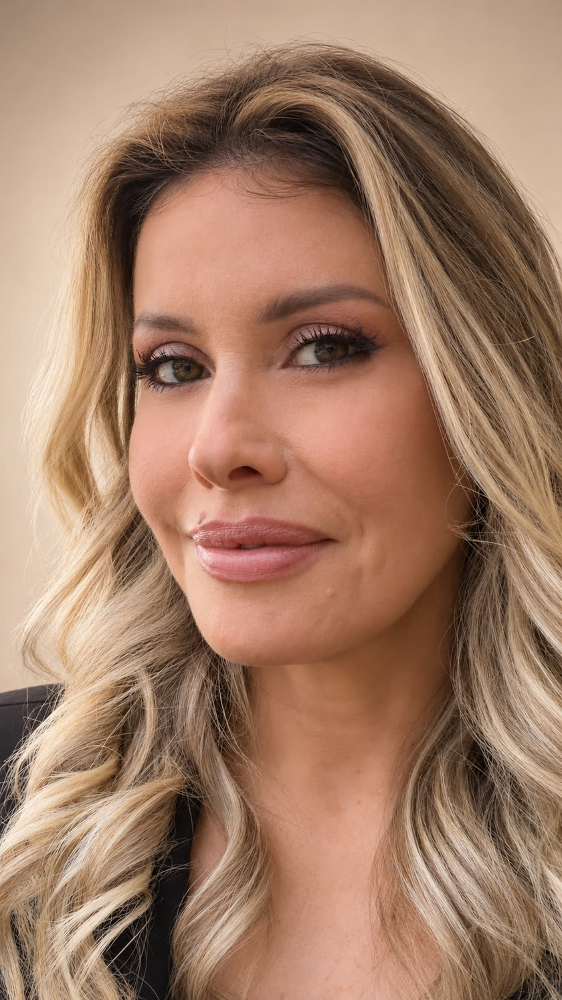
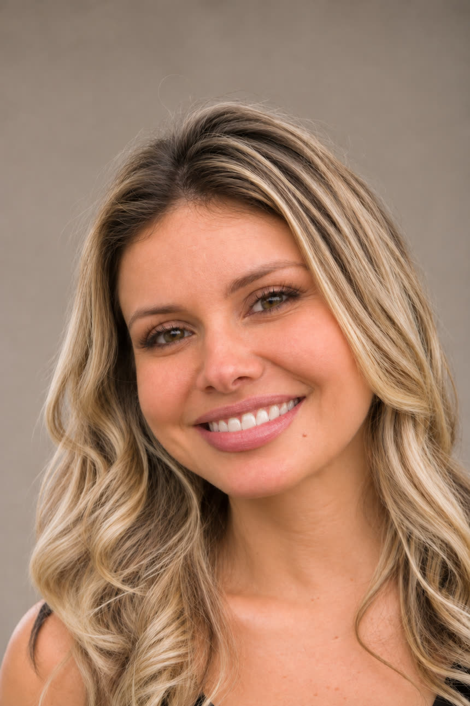
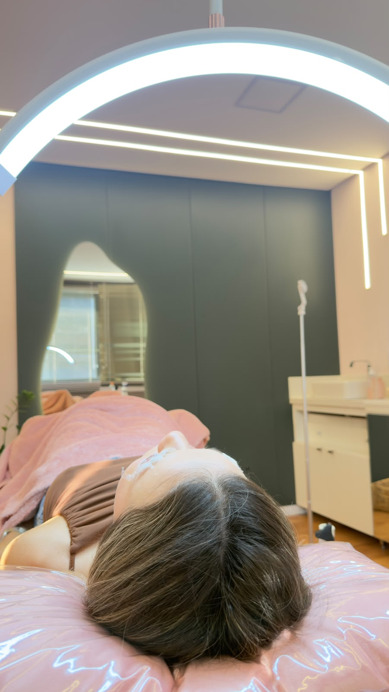

Diagnóstico & Leitura Cutânea Individualizada
Mapeamento detalhado de hidratação, oleosidade, sensibilidade, integridade da barreira protetora e histórico de manchas. Cada conduta nasce de uma avaliação clínica minuciosa.
Há mais de 10 anos construindo resultados reais através da leitura individualizada da pele, ativos cosméticos de alta performance e fotobiomodulação a laser — um cuidado autoral no coração do bairro Petrópolis, em Porto Alegre.


“Nenhuma pele deve ser tratada por receitas prontas. O verdadeiro viço nasce quando entendemos a fisiologia da pele, respeitamos sua barreira de proteção e escolhemos os ativos exatos para o momento de cada mulher.”
Na Adri Sant’Anna Beauty, a cosmetologia não é acessório — ela é a base de cada protocolo. Antes de qualquer aparelho ou técnica, investigamos como a sua pele responde à rotina, ao clima, aos hormônios e aos ativos que realmente permeiam e regeneram o tecido.
Mapeamento detalhado de hidratação, oleosidade, sensibilidade, integridade da barreira protetora e histórico de manchas. Cada conduta nasce de uma avaliação clínica minuciosa.
Sinergia personalizada entre ácidos suaves e seguros, antioxidantes, peptídeos regeneradores e fatores de reparo — potencializados pela fototerapia a laser para máxima absorção.
O cuidado continua fora da cabine. Ajustamos sua rotina em casa com precisão para sustentar a produção de colágeno, preservar o equilíbrio da pele e evitar efeito rebote.
Selecione uma frente de cuidado para explorar como a cosmetologia clínica e os recursos tecnológicos atuam juntos em cada protocolo.
Desenvolvido para quem busca firmeza, elasticidade e luminosidade progressiva sem alterar os traços naturais. Associamos ativos bioestimuladores, peptídeos sinalizadores e fotobiomodulação vermelha e âmbar para despertar a produção natural de colágeno.
O gerenciamento de manchas e melasma exige delicadeza técnica para não gerar inflamação nem efeito rebote. Utilizamos blends cosméticos antioxidantes e ativos clareadores inteligentes combinados ao LED Verde e Laser terapêutico para uniformizar o tom e iluminar a pele de forma gradual.
Tanto peles acneicas quanto peles com rosácea ou sensibilizadas compartilham uma barreira de proteção fragilizada. Tratamos a inflamação na origem com cosmetologia calmante, regulação de oleosidade e fototerapia bactericida e reparadora sem ressecar a pele.
Muito além de uma limpeza convencional: um cuidado completo para remover impurezas, cravos e células desvitalizadas sem agredir a pele. Finalizada com máscaras cosméticas calmantes e LEDterapia para encerrar a sessão com a pele fresca, hidratada e luminosa.
O couro cabeludo é uma extensão da pele e merece o mesmo rigor cosmético. Utilizamos protocolos dedicados do sistema Fluence MAXX aliados a tônicos e higienização bactericida para controlar oleosidade, dermatite seborreica, foliculite, queda capilar intensa (eflúvio) e quadros de alopecia.
Na clínica utilizamos a plataforma Fluence MAXX HTM, referência nacional em terapias combinadas de Laser e LED com mais de 1.700 protocolos clínicos. A luz terapêutica funciona como catalisadora da cosmetologia: entrega energia celular (ATP) às camadas da pele, acelera a reparação e multiplica os resultados sem procedimentos invasivos.
Aumenta a produção de energia celular (ATP), estimula expressivamente a síntese de colágeno e elastina e acelera a recuperação da pele após peelings e protocolos renovadores. O infravermelho alcança camadas mais profundas com forte ação calmante e cicatrizante.
Aplicação na Cosmetologia: Rejuvenescimento, cicatrização pós-procedimentos, melhora da firmeza e terapia capilar contra queda.
Uma trajetória construída no atendimento próximo, no estudo contínuo da cosmetologia aplicada e no respeito absoluto à individualidade de cada paciente.
Ao longo de mais de uma década na estética, a Adri aprimorou um olhar que vai além da superfície: cada consulta começa ouvindo o que a sua pele revela hoje e entendendo como ela reage à rotina e às estações.
Em vez de protocolos padronizados ou excessos artificiais, sua clínica une a precisão dos ativos cosméticos, o aconchego do atendimento em cabine sem pressa e o suporte tecnológico do laser terapêutico — devolvendo saúde, maciez e segurança ao se olhar no espelho.

Cada cor e textura da nossa sala no Centro Empresarial Montreal, no bairro Petrópolis, em Porto Alegre, foi desenhada para desacelerar: a serenidade do verde na parede, o espelho de linhas orgânicas, a iluminação suave e o conforto envolvente do rosa antigo.

Na primeira consulta analisamos o histórico da sua pele, sensibilidade, manchas, textura, rotina atual de skincare e hábitos. A partir dessa leitura, traçamos um plano sob medida unindo sessões em cabine e orientação de cuidados em casa.
Não. A fotobiomodulação é um recurso não invasivo, totalmente indolor e relaxante. Além de estimular colágeno e potencializar os ativos cosméticos, ela acalma a pele e reduz a vermelhidão.
Sim — esse é justamente o diferencial da cosmetologia personalizada. Escolhemos ácidos suaves, ativos calmantes e luzes específicas (como LED Verde e Âmbar) que tratam sem agredir nem causar efeito rebote.
Não é necessário. Você pode nos contar qual é a sua principal queixa (manchas, acne, perda de viço, queda capilar ou higienização) e definiremos juntas na avaliação a combinação mais segura e eficaz.
Atendemos com hora marcada na Av. Palmeira, 27 — Sala 307 (Centro Empresarial Montreal), no bairro Petrópolis, em Porto Alegre. Todo agendamento é combinado diretamente pelo WhatsApp (51) 98136-0838.
Selecione o que você mais deseja cuidar na sua pele hoje para iniciar sua conversa no WhatsApp com a Adri já direcionada:
Ou fale diretamente pelo número (51) 98136-0838